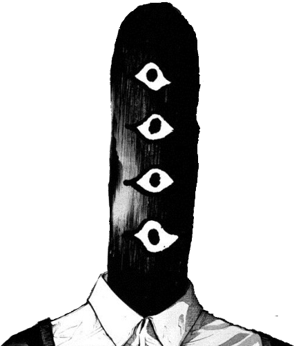
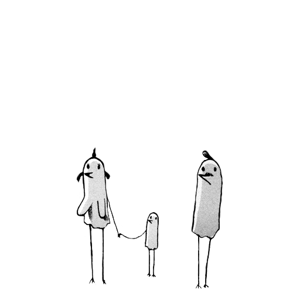

— page 02 / inventory of the soul
things i love.
a list of stuff that lives in my head. click anything to search it. updated whenever something new gets stuck.
manga · anime
- Goodnight PunpunInio Asano
- Chainsaw ManTatsuki Fujimoto
- A Silent VoiceYoshitoki Ōima
- One PieceOda
- JoJo's Bizarre AdventureAraki
- Jujutsu KaisenGege Akutami
- My Hero AcademiaHorikoshi
- One Punch ManONE
- Takopi's Original SinTaizan5
- Cyberpunk: EdgerunnersTrigger
romance · the quiet ones
- Your Name (Kimi no Na wa)Shinkai
- A Silent Voice (movie)Yamada
- Toradora!classic
- Horimiyajust nice
- Kimi ni TodokeFrom Me to You
- Anohanacry every time
- 5 Centimeters Per SecondShinkai
- Weathering With YouShinkai
music
- TV Girlall of it
- wifi skeletonvibe
- i'm so crazy for youRebzyyx
- undressedsombr
- Andrew in DragThe Magnetic Fields
- Boys Don't CryThe Cure
- Stress ReliefLate Night Drive Home
- Prom QueenBeach Bunny
- Real Lifeear
- Pay Me BackRare Americans
- PICK UP THE PHONE pt 2heyzuko!
- Alex Ganything
- Jaydesvibes

films · series
- Cyberpunk 2077night city
- JoJo's Bizarre Adventureall parts
- One Piece (anime)long haul
- My Hero Academiaplus ultra
- Jujutsu Kaisen (anime)studio mappa
- One Punch Man (anime)season 1 specifically
games
- Minecraftforever
- Fortnitesometimes
- Robloxwhere i actually learned to code
- Subnauticaunparalleled
- Subnautica: Below Zerosequel energy
- Subnautica 2waiting...
- Gorilla Tagvr peak
- Rec Roomin loving memory
- CHUCHELamanita
- Animal Companyvr again
- R.E.P.Ogood with friends
- Lethal Company"the company"
- Slime Rancherpure serotonin
- GTA V10+ years strong

books · the things i actually read
- I Have No Mouth, and I Must ScreamHarlan Ellison
- The Biblealways
- Goodnight Punpun (vols)Inio Asano
- A Silent Voice (manga)Yoshitoki Ōima
- Jujutsu Kaisen (manga)Akutami
- Chainsaw Man (manga)Fujimoto
"the loneliness of being able to love but not be loved is a special kind of quiet."
— a thought i had once